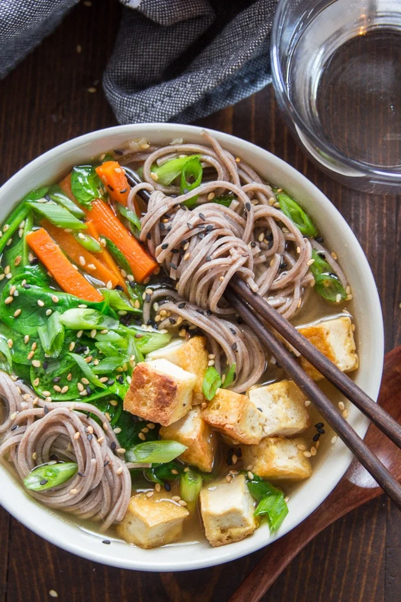

Miso Soba Noodle Soup With Crispy Tofu

This soba noodle soup really helps warm me up on a cold day
You might find yourself coming home after a long day of work, not sure what to make for dinner.
Perhaps it's cold outside and you're not in the mood to go to the grocery store.
Fear not! This crispy tofu soba noodle recipe is easy and
you can probably make it with the shit you have in your pantry
Bear in mind that this recipe is delicious and keeps pretty well in the fridge. I make it for
my girlfriend from time to time and she usually says it's "pretty good!" Can't go wrong with that
now can you?
Ingedients
- 3 ounces dried soba noodles
- ½ teaspoon toasted sesame oil
- 2 tablespoons canola oil, or neutral oil of choice, divided
- ½ pound extra firm tofu, drained, pressed, and cut into ½ inch cubes
- 2 garlic cloves, minced
- 1 teaspoon freshly grated ginger
- 2 scallions, chopped, white and green parts separated
- 6 cups water
- 2 medium carrots, cut into matchsticks
- ¼ cup white miso paste
- 2-4 tablespoons soy sauce, to taste
- 4 cups sliced fresh spinach or baby spinach
- Sesame seeds, for serving
Directions
- Prep veggies
- boil water
- cook noodles according to package instructions
- drain and rinse noodles with cold water
- coat noodles in sesame oil and set aside
- cook tofu until crispy, set aside
- add oil to pot and cook onions, garlic until fragrant (about one minute)
- add water, bring to a boil
- add carrots and spinach and cook until tender
- prepare bowls with tofu and noodles, ladle soup into it and garnish with onion and sesame seeds